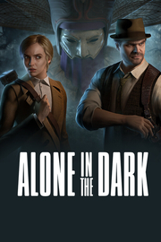

Alone in the Dark
Alone in the Dark
Detalles
|  | |
| Tiempo de juego | No Jugado |
| Última actividad | Nunca |
| Añadido | 11/6/2024 14:41:31 |
| Modificado | 2/5/2025 2:04:09 |
| Estado de finalización | No Jugado |
| Librería | Playnite |
| Fuente | 1 TB EXT |
| Plataforma | PC (Windows) |
| Fecha de lanzamiento | 3/20/2024 |
| Puntuación de la Comunidad | 76 |
| Puntuación de la Crítica | |
| Puntuación de usuario | |
| Género | Acción Aventura |
| Desarrollador | Pieces Interactive |
| Editor | THQ Nordic |
| Característica | Cloud Saves Compat. Total Con Mando Cromos De Logros De Préstamo Familiar Un Jugador |
| Enlaces | Punto de encuentro Discusiones Guías Noticias Página de la tienda PCGamingWiki Logros |
| Tag | Acción Aventura Cinematográficos Combate Detectives Lovecraftianos Misterio Narración Noir Oscuros Protagonista femenina Psicológicos Realistas Sobrenaturales Supervivencia / Terror Surrealistas Suspense Tercera persona Terror Terror psicológico |
Descripción
Alone in the Dark aúna el horror psicológico y el encanto del estilo gótico sureño para recrear el icónico juego que se convirtió en una referencia del género. Te invitamos a que emprender un viaje hacia la locura, donde cada encuentro podría ser el último. Cuanto más te acerques a desentrañar el misterio de Derceto, más acuciante será el hambre de los ojos que te acechan en la oscuridad. Cada bala marcará la diferencia entre la vida o un final impensable. La siguiente puerta que abras podría llevarte a un reino de pesadillas, garras afiladas, tentáculos y escasa cordura. Viaja a la Luisiana de entreguerras, una era decadente con una historia sombría: una huida de los traumas del pasado y de una sociedad intolerante hacia algo más oscuro que ha acechado pacientemente durante eones. Alone in the Dark como nunca antes lo habías visto: una intrincada narrativa con un toque de estilo gótico sureño y espeluznante locura que rinde homenaje a sus orígenes legendarios y avanza en la narración del género de terror de supervivencia.


Una historia inquietante de misterio y locura
Adéntrate en Derceto Manor, una mansión llena de intrigas con un terrible secreto. Emily Hartwood y el detective privado Edward Carnby se embarcan en una tétrica aventura en busca de respuestas: Emily al misterio de su tío desaparecido, Edward al caso más difícil de su vida y ambos a preguntas que no se atreven a hacerse. Este clásico reinventado te invita a explorar una inolvidable aventura para un solo jugador repleta de suspense, sustos y revelaciones que pondrán a prueba los límites de tu imaginación.Talentos de Hollywood
Disfruta de algunas de las mejores interpretaciones del género de terror de supervivencia con los galardonados actores Jodie Comer (Killing Eve, Free Guy) y David Harbour (Stranger Things, Viuda Negra) por primera vez en un videojuego.Los rostros de Jodie y David, capturados a la perfección, dan vida a Emily Hartwood y Edward Carnby, lo que da personalidad a la historia de Alone in the Dark, que se debe jugar dos veces para disfrutar de toda la experiencia.Homenaje a los pioneros del terror
Redescubre la esencia del terror psicológico en un homenaje al juego original de 1992 que fue precursor del género de terror de supervivencia. Alone in the Dark ofrece una experiencia impregnada del terror atmosférico clásico, con narrativa y jugabilidad de nueva generación. Esencial para los fans de las historias retorcidas, exploraciones angustiosas y combates desesperados.Una historia que desafía a la realidad
Concebido por Mikael Hedberg, aclamado guionista de clásicos del terror "SOMA" y "Amnesia", el misterio de Alone in the Dark ahonda en temas como el trauma, la fe, el mal y el abandono. No importa a quién escojas para enfrentarte a la pesadilla. Tanto si escoges a Emily como a Edward, descubrirás secretos que desafiarán todo lo que creías saber sobre la narrativa de los videojuegos.- Explora la mansión Derceto en esta reinvención de Alone in the Dark, una carta de amor al clásico de terror de los 90.
- Vuelve a las raíces del terror psicológico y embárcate en un viaje envolvente digno del juego que inició el género.
- Sumérgete en un mundo lleno de sonidos que te erizan la piel con una banda sonora de doom jazz inquietante y a la vez hipnotizadora.
- Disfruta de la emoción de la supervivencia desesperada en un mundo donde la realidad empieza a desmoronarse, el mal acecha en cada sombra y la munición escasea.
- Vive esta pesadilla desde la perspectiva de Emily Hartwood o de Edward Carnby y desentierra los oscuros secretos de una mansión gótica.
- Sumérgete en una profunda historia psicológica que va más allá de lo imaginable de la mano de Mikael Hedberg, el escritor de terror de culto autor de SOMA y Amnesia.
- Emily y Edward cobran vida gracias al talento de Jodie Comer (Killing Eve, Free Guy) y David Harbour (Stranger Things, Viuda Negra), que prestan su voz, su aspecto y sus magníficas dotes de interpretación a los protagonistas.